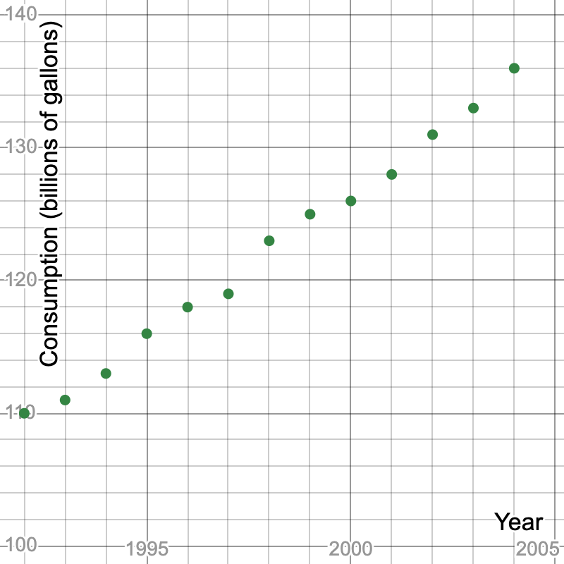
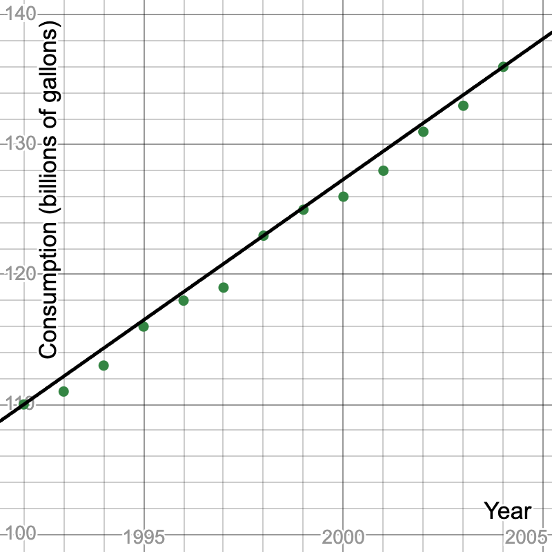
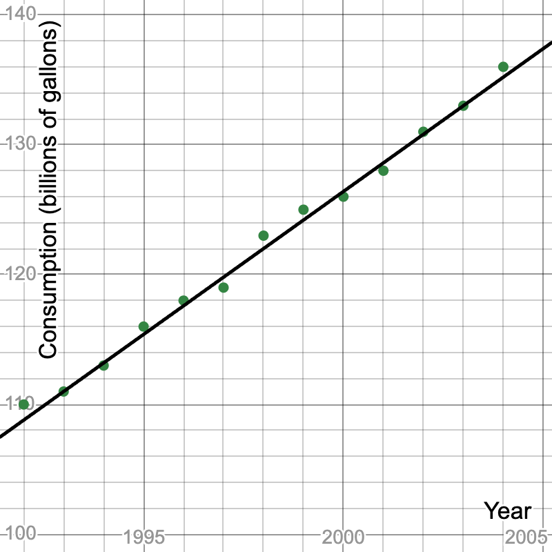

We first look at a display of this data.

The data points form close to a straight line growing upward.
Computing the absolute change from year to year via subtraction as well as the graph would both show a nearly linear relationship. The change from year to year varies, but stays around two to three and the plot looks to be growing steadily. In an exponential relationship, we’d see the absolute change increasing (or descreasing).
We can determine the average absolute change by considering the data at both extremes. From 1992 to 2004, gasoline consumption grew from 110 to 136 billion gallons. That is a change of
\(136 - 110 = 26\) billion gallons in
\(2004 - 1992 = 12\) years. That is an average rate of 2.167 billion gallons per year. So, the
common difference,
\(d\text{,}\) is 2.167.
This may look more familiar if we put the computations into the standard formula for computing slope.
\begin{equation*}
\text{slope} = \frac{\text{change in output}}{\text{change in input}} = \frac{136 - 110}{2004-1992} = \frac{26}{12} = 2.167
\end{equation*}
The starting point for our data set is the year 1992 when consumption was 110 billion gallons. Rather than needing to input numbers near 2000 into our formula, we’ll let the variable
\(t\) represent years since 1992. Also, instead of including a bunch of zeros, we’ll let the variable
\(C\) represent the gasoline consumption in billions of gallons. So, when
\(t = 0\text{,}\) \(C = 110\text{,}\) and this gives us our initial value, or y-intercept.
The result is a linear equation:
\(C = 110 + 2.167t\text{.}\) We can look at the graph of this line to get a sense of the accuracy:

The same data points as before are shown with a straight line approximation graph.
We might be bothered by the fact that it appears the line passes through three points exactly, but is above the others. Perhaps we’d like it to be closer to the middle, with a similar number of data points above and below. We can try using two differnt data points to estimate the average common difference, say 1993 and 2003:
\begin{equation*}
d = \frac{133 - 111}{2003 - 1993} = \frac{22}{10} = 2.2
\end{equation*}
Changing the initial value to 111 billion gallons in 1993 and adjust \(t\) to represent years since 1993, gives \(C = 111 + 2.2t\) as another formula to describe the situation. That graph looks like:

The same data points as before are shown with a straight line approximation graph.
Both are reasonable models for this relationship, but we’ll stick with the second option to answer the questions.
To predict the consumption in 2022, we need to determine what value of our input variable, \(t\text{,}\) corresponds to the year 2022. Subtraction reveals that we want \(t = 2022 - 1993 = 29\text{.}\) Now, we substitute that value into our model formula and complete the computations:
\begin{align*}
C \amp = 111 + 2.2(29)\\
\amp = 111 + 63.8\\
\amp = 174.8
\end{align*}
Our model predicts the gasoline consumption in 2022 to 174.8 billion gallons.
The next question is the reverse type, when will consumption reach 200 billion gallons. We are given the value of the output variable, \(C = 200\text{,}\) and asked to find the corresponding input, \(t\text{.}\) Similar to above, we substitute the values we know into the formula, but this time we need to use some algebra to find \(t\text{:}\)
\begin{align*}
C \amp = 111 + 2.2t\\
200 \amp = 111 + 2.2t\\
200 - 111 \amp = 111 + 2.2t - 111\\
89 \amp = 2.2t\\
\frac{89}{2.2} \amp = \frac{2.2t}{2.2}\\
40.45 \amp t
\end{align*}
This says that 40 years from 1993 the consumption will be below 200 billion gallons, but after 41 years it will exceed 200 billion gallons. According to this model, if the trend continues, the US gasoline consumption would exceed 200 billion gallons in 2034.